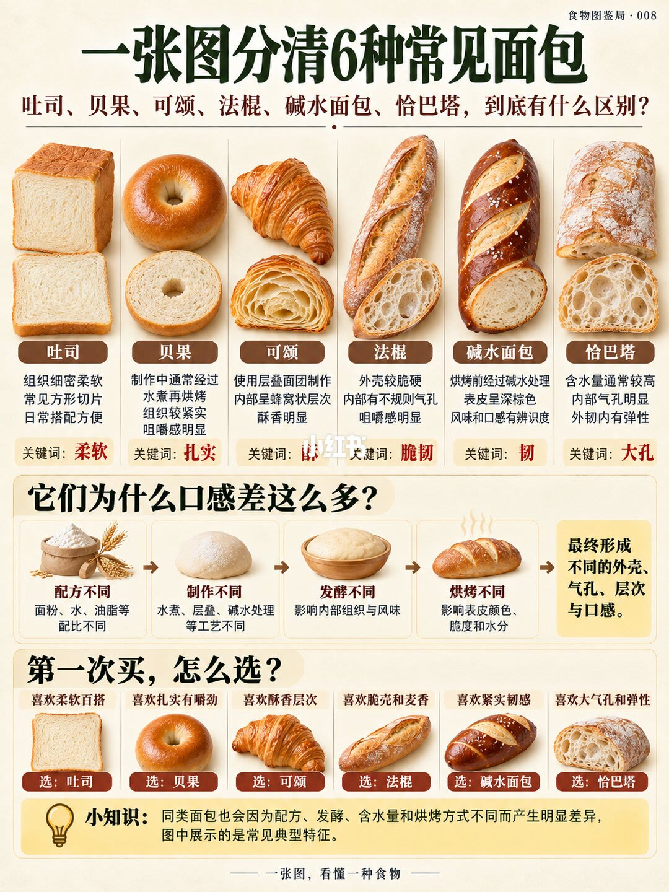

图文实录 · 小红书 · 食物图鉴局
贝果、可颂、恰巴塔到底差在哪？
一张图把六种常见面包拆成口感关键词。差别来自配方、工序、发酵和烘烤，不是名字本身。
1/1
六种面包，六个关键词
吐司：组织细软，多是方的，关键词是柔软。贝果：先煮再烤，组织紧、有嚼劲，关键词是扎实。可颂：层酥面团，内里像蜂窝，有黄油香，关键词是酥层。法棍：壳硬脆，气孔不规则，关键词是脆韧。碱水面包：烤前过碱水，表皮深褐、味道特别，关键词是韧。恰巴塔：水量高，气孔大、内里有弹性，关键词是大孔。
中间一张流程图把原因收成四步：配方里粉、水、油的比例不同；制作上有煮、折叠或碱水；发酵改结构和味道；烘烤改壳色、脆度和水分。结果落在外壳、气孔、层次和口感上。
选购口诀：要日常柔软选吐司，要扎实嚼劲选贝果，要黄油层次选可颂，要脆壳麦香选法棍，要紧韧选碱水，要大孔弹性选恰巴塔。页脚写明同一种面包也会因配方和做法差很多，这张图只是典型样子。

汇总
名字相同，店和店仍会不一样
这张图回答的是第一次怎么选，不是配方。贝果的「先煮」、可颂的层、碱水面包的碱液，是图上给出的工艺原因。没有写出煮的时间和碱液浓度。页脚已经把边界说了：同一名字，配方和烘烤一变，口感就会离开这张典型图。